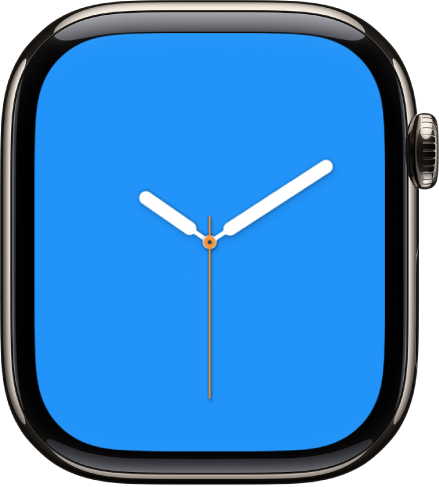

此表盘以亮色显示时间和添加的任何所选功能。
下方的文件数包括本地化资源。固件名称键能确认包的归属；组件的圆屏点击边界、亮屏过渡与 AOD 对照均待设备验证。
NTKColorAnalogFaceBundle.bundleFACE_STYLE_COLOR_ANALOG_DESCRIPTIONEDIT_OPTION_LABEL_COLOR_ANALOG_STYLE_CIRCULAREDIT_OPTION_LABEL_COLOR_ANALOG_STYLE_DIALEDIT_OPTION_LABEL_COLOR_ANALOG_STYLE_FULLSCREEN色组与设备条件 ColorAnalog.color.plist 共享色组与默认值
-[NTKColorAnalogBackgroundView applyToTritiumTransitionFraction:];+[NTKColorAnalogFace tritium_burnInFaceName];-[NTKColorAnalogFaceView tritium_createFaceAnimator];-[NTKColorAnalogBackgroundView applyTransitionFraction:fromStyle:toStyle:];-[NTKColorAnalogBackgroundView applyToTritiumTransitionFraction:];-[NTKColorAnalogBackgroundView applyTransitionFraction:fromColor:toColor:withPrimaryColor:boostedColor:];-[NTKColorAnalogFaceView _applyTransitionFraction:fromOption:toOption:forCustomEditMode:slot:];-[NTKColorAnalogFaceView tritium_createFaceAnimator];-[NTKColorAnalogFaceView _cleanupAfterTransitionToOption:forCustomEditMode:slot:];-[NTKColorAnalogFaceView _configureForTransitionFraction:fromEditMode:toEditMode:];-[NTKColorAnalogHandsView secondHandConfiguration];-[NTKColorAnalogHandsView minuteHandConfiguration];-[NTKColorAnalogBackgroundView initWithFrame:device:];-[NTKColorAnalogBackgroundView applyTransitionFraction:fromStyle:toStyle:];-[NTKColorAnalogBackgroundView applyToTritiumTransitionFraction:];-[NTKColorAnalogBackgroundView applyStyle:];-[NTKColorAnalogBackgroundView updateLayerVisibilityForStyles:];-[NTKColorAnalogBackgroundView applyColor:];-[NTKColorAnalogBackgroundView applyTransitionFraction:fromColor:toColor:withPrimaryColor:boostedColor:];+[NTKColorAnalogFace _localizedNameOverrideForCustomEditMode:forDevice:];+[NTKColorAnalogFace _faceClassOfFaceWithRichComplicationSlotsForDevice:];+[NTKColorAnalogFace _complicationSlotDescriptors];+[NTKColorAnalogFace pigmentFaceDomain];+[NTKColorAnalogFace _orderedComplicationSlots];+[NTKColorAnalogFace tritium_burnInFaceName];+[NTKColorAnalogFace _defaultSelectedComplicationSlotForDevice:];+[NTKColorAnalogFace _monogramComplicationSlotForDevice:];-[NTKColorAnalogFace complicationSlotsHiddenByEditOption:];-[NTKColorAnalogFace _editModeForOldEncodingIndex:];-[NTKColorAnalogFace _defaultOptionForMissingCustomEditMode:slot:];-[NTKColorAnalogFace _faceDescriptionKey];-[NTKColorAnalogFace _customEditModes];-[NTKColorAnalogFace _optionClassForCustomEditMode:];-[NTKColorAnalogFace applyPreviewConfigurationWithFamily:faceColor:];-[NTKColorAnalogFace _shortFaceDescription];-[NTKColorAnalogFace _numberOfOptionsForCustomEditMode:slot:];-[NTKColorAnalogFace _faceDescription];-[NTKColorAnalogFace _defaultOptionForCustomEditMode:slot:];-[NTKColorAnalogFace requiresPigmentEditOption];-[NTKColorAnalogFace _indexOfOption:forCustomEditMode:slot:];-[NTKColorAnalogFace _wantsUnadornedSnapshot];-[NTKColorAnalogFace faceSharingName];-[NTKColorAnalogFace _optionAtIndex:forCustomEditMode:slot:];-[NTKColorAnalogFaceBundle _legacyDefaultFacesForDevice:];-[NTKColorAnalogFaceBundle defaultBurnInStudyFacesForDevice:];-[NTKColorAnalogFaceBundle galleryTitle];-[NTKColorAnalogFaceBundle complicationTypesBySlot];-[NTKColorAnalogFaceBundle _legacyGalleryFacesForDevice:];-[NTKColorAnalogFaceBundle galleryEditOptionsForDevice:];-[NTKColorAnalogFaceBundle _gloryEDefaultFacesForDevice:];-[NTKColorAnalogFaceBundle galleryPigmentsForDevice:];-[NTKColorAnalogFaceBundle _spring2020DefaultFacesForDevice:];-[NTKColorAnalogFaceBundle legacyFaceStyle];-[NTKColorAnalogFaceBundle _graceDefaultFacesForDevice:];-[NTKColorAnalogFaceBundle _gloryBDefaultFacesForDevice:];-[NTKColorAnalogFaceBundle defaultFaceForDevice:];-[NTKColorAnalogFaceBundle galleryFacesForDevice:];-[NTKColorAnalogFaceBundle _allStyleFacesForDevice:colors:];-[NTKColorAnalogFaceBundle faceClass];-[NTKColorAnalogFaceBundle _allStyleFacesForDevice:colorOptions:];-[NTKColorAnalogFaceBundle faceViewClass];-[NTKColorAnalogFaceBundle _colorOptionFromColorValue:device:];-[NTKColorAnalogFaceBundle heroGloryBDefaultFacesForDevice:];+[NTKColorAnalogFaceBundleContainer faceBundleClasses];+[NTKColorAnalogFaceView _timeViewClass];-[NTKColorAnalogFaceView _frameForComplicationDisplayWrapper:inSlot:];-[NTKColorAnalogFaceView _keylineCornerRadiusForComplicationSlot:];-[NTKColorAnalogFaceView _enumerateColorComplicationSlotsWithBlock:];-[NTKColorAnalogFaceView setComplicationForegroundColor:];-[NTKColorAnalogFaceView _complicationContainerViewForSlot:];-[NTKColorAnalogFaceView _monogramKeylinePadding];-[NTKColorAnalogFaceView complicationForegroundColor];-[NTKColorAnalogFaceView _monogramReferenceFrame];-[NTKColorAnalogFaceView _applyTransitionFraction:fromOption:toOption:forCustomEditMode:slot:];-[NTKColorAnalogFaceView _needsForegroundContainerView];-[NTKColorAnalogFaceView layoutSubviews];-[NTKColorAnalogFaceView _applyBreathingFraction:forCustomEditMode:slot:];-[NTKColorAnalogFaceView tritium_createFaceAnimator];-[NTKColorAnalogFaceView _fadeComplicationFraction:entry:exit:slot:];-[NTKColorAnalogFaceView _cleanupAfterTransitionToOption:forCustomEditMode:slot:];-[NTKColorAnalogFaceView _updateMonogramLayoutRule];-[NTKColorAnalogFaceView _configureForEditMode:];-[NTKColorAnalogFaceView _configureTimeView:];-[NTKColorAnalogFaceView _applyOption:forCustomEditMode:slot:];-[NTKColorAnalogFaceView _keylinePaddingForState:];-[NTKColorAnalogFaceView _homeScreenStyle];-[NTKColorAnalogFaceView _colorComplicationViewForSlot:];-[NTKColorAnalogFaceView _unloadSnapshotContentViews];-[NTKColorAnalogFaceView _keylineViewForComplicationSlot:];-[NTKColorAnalogFaceView _monogramReferenceFrameForStyle:];-[NTKColorAnalogFaceView _keylineStyleForComplicationSlot:];-[NTKColorAnalogFaceView _homeScreenTimeViewConfiguration];-[NTKColorAnalogFaceView _shouldConfigureForAOD1Hz];-[NTKColorAnalogFaceView _fadesComplicationSlot:inEditMode:];-[NTKColorAnalogFaceView _edgeGapForState:];-[NTKColorAnalogFaceView _loadSnapshotContentViews];-[NTKColorAnalogFaceView _configureComplicationView:forSlot:];-[NTKColorAnalogFaceView _loadLayoutRules];-[NTKColorAnalogFaceView _newLegacyViewForComplication:family:slot:];-[NTKColorAnalogFaceView layoutConfigurationForSlot:];-[NTKColorAnalogFaceView _configureForTransitionFraction:fromEditMode:toEditMode:];-[NTKColorAnalogFaceView _wantsStatusBarIconShadow];-[NTKColorAnalogFaceView initWithFaceStyle:forDevice:clientIdentifier:];-[NTKColorAnalogFaceView _lisaGapForState:];-[NTKColorAnalogFaceView _applyRubberBandingFraction:forCustomEditMode:slot:];-[NTKColorAnalogFaceView _complicationPickerStyleForSlot:];-[NTKColorAnalogHandsView secondHandConfiguration];-[NTKColorAnalogHandsView minuteHandConfiguration];-[NTKColorAnalogHandsView hourHandConfiguration];+[NTKColorAnalogRichFace _complicationSlotDescriptors];+[NTKColorAnalogRichFace _richComplicationSlotsForDevice:];+[NTKColorAnalogRichFaceBundle identifier];-[NTKColorAnalogRichFaceBundle galleryTitle];-[NTKColorAnalogRichFaceBundle legacyFaceStyle];-[NTKColorAnalogRichFaceBundle defaultFaceForDevice:];-[NTKColorAnalogRichFaceBundle faceClass];-[NTKColorAnalogRichFaceBundle faceViewClass];+[NTKColorAnalogRichFaceView uiSensitivity];-[NTKColorAnalogRichFaceView _fadeComplicationFraction:entry:exit:slot:];-[NTKColorAnalogRichFaceView _applyOption:forCustomEditMode:slot:];-[NTKColorAnalogRichFaceView _configureComplicationView:forSlot:];-[NTKColorAnalogRichFaceView _loadLayoutRules];-[NTKColorAnalogRichFaceView _newLegacyViewForComplication:family:slot:];-[NTKColorAnalogRichFaceView layoutConfigurationForSlot:];-[NTKColorAnalogRichFaceView initWithFaceStyle:forDevice:clientIdentifier:];-[NTKColorAnalogRichFaceView _keylineFrameForComplicationSlot:selected:];+[NTKColorAnalogStyleEditOption _snapshotKeyForValue:forDevice:];+[NTKColorAnalogStyleEditOption optionWithStyle:forDevice:];+[NTKColorAnalogStyleEditOption _orderedValuesForDevice:];-[NTKColorAnalogStyleEditOption localizedName];-[NTKColorAnalogStyleEditOption _valueToFaceBundleStringDict];-[NTKColorAnalogStyleEditOption style];